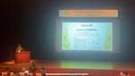

Helpfeel Developers' Blog
https://blog.notainc.com/
株式会社Helpfeelのエンジニアが情報を発信していきます
フィード

Helpfeel Tech Hour vol.4 「デザインとプロセス編」 を開催しました
Helpfeel Developers' Blog
id:Pasta-K です。去る2024年3月4日にHelpfeel Tech Hour vol.4 「デザインとプロセス編」を開催しました。 「デザインとプロセス編」では社内のデザイナー4人に登壇していただきました。マーケティングのデザインに関わるプロセスの話からからUIデザインまで幅広い話題をお届けできたのではないでしょうか。 イベントの様子はYouTubeで公開しています。 登壇内容と登壇資料の紹介 それぞれの登壇タイトルと資料、また各発表者からコメントも頂いているので紹介します。 手戻りを防ぐデザインの進め方を考えてみた by maruhama 手戻りを防ぐデザインの進め方を考え…
5日前

言語処理学会第30回年次大会に参加しました！
Helpfeel Developers' Blog
Helpfeel 生成AIエキスパート・エンジニアのteramotodaikiです。 言語処理学会第30回年次大会(NLP2024)というイベントに参加しました！ 今回はその報告をまとめます。 参加報告 2024/03/11〜2024/03/15に神戸で開催されたNLP2024にプラチナスポンサーで参加しました！ 参加告知内容はこちらをご確認ください！ blog.notainc.com また、参加中の途中経過についてはGyazo プロジェクトマネージャーのnishiyamaがブログにまとめてくれています。 言語処理学会第30回年次大会（NLP2024）に参加しています - Helpfeel D…
9日前

言語処理学会第30回年次大会（NLP2024）に参加しています
Helpfeel Developers' Blog
Gyazo プロジェクトマネージャーのnishiyamaです。 3月11日から神戸市で開催されている言語処理学会第30回年次大会（NLP2024）に、他のメンバーとともに参加しています。 anlp.jp 本記事では会場となっている現地・神戸国際会議場の様子と、初日・二日目のセッションのピックアップをお伝えいたします。 会場について 今年の大会が開催されている神戸国際会議場は神戸市のポートアイランドにあります。 会議場やホテル、商業・港湾施設などが集積する「21世紀の海上都市」と銘打って1981年に街びらきが行われたこの島は、完成当時には世界最大の人工島だったそうです。 アクセスは主に海側の神戸…
14日前
言語処理学会第30回年次大会（NLP2024）に参加します！
Helpfeel Developers' Blog
3月11日〜15日で開催される言語処理学会第30回年次大会（NLP2024）にプラチナスポンサーとして参加いたします！各プロダクトと学術的要素をまとめたポスターを展示いたしますのでぜひブースに遊びに来てください！#NLP2024 #helpfeel_tech
19日前
ハックツハッカソンにメンターとして参加してきました
Helpfeel Developers' Blog
株式会社Helpfeelの寺本です。 2024年2月17〜18日に京都で行われたハックツハッカソンに、メンターとして参加してきました！ 普段からお世話になっているProgate様が今回「ハックツハッカソン ツマジロカップ」のスポンサーをされており、その題材として「Helpfeel 記法を展開して柔軟な FAQ の検索を実現しよう | Progate Path」というタスクをHelpfeel社と共同制作させていただきました。また、折角なので制作に携わった弊社エンジニア2名もハッカソン当日にメンターとして参加することにしました。 開催地は京都の妙心寺というお寺にある壽聖院（じゅしょういん）さん。と…
1ヶ月前
#今出川FM : YAPC::Hiroshima 2024の会場で note株式会社 CTO konpyuさんと「なぜ、技術イベントに協賛するのか」について話しました
Helpfeel Developers' Blog
株式会社Helpfeelの今をお届けするPodcast、今出川FMを更新しました！！！！！ 今回の今出川FMは、先日開催されたYAPC::Hiroshima 2024内のランチタイムセッションにて弊社 CTO の akiroom と note株式会社 CTO のkonpyuさんで「なぜ、技術イベントに協賛するのか」について話した様子をお送りします。 公開収録パートの録音音源はYAPC::Hiroshima 2024実行委員会さまに提供を頂きました。前回に引き続きありがとうございます。 YAPC::Hiroshima 2024 公開収録スペシャル: note株式会社 CTO konpyuさんと「…
1ヶ月前
YAPC::Hiroshima 2024に参加しました！
Helpfeel Developers' Blog
こんにちは！Helpfeelエンジニアのbalarです。 2024年2月10日（土）に広島国際会議場で開催されたYAPC::Hiroshima 2024に参加してきました！ 参加告知内容はこちらをご確認ください！ blog.notainc.com YAPC::Hiroshima 2024は前日の2月9日（金）に前夜祭、翌日の2月11日（日）にアフターイベントYAYAPCが開催されており、私はすべてに参加してYAPCをめいっぱい楽しんできました。 参加してみて 印象に残っているセッションは前夜祭のキャッシュバスターズのお二人によるパネルディスカッション「Cache-Control: max-ag…
1ヶ月前
YAPC::Hiroshima 2024にPerl Sponsorとして参加します
Helpfeel Developers' Blog
こんにちは、Helpfeelエンジニアのid:balarです。 今日は2024年2月10日に開催されるYAPC::Hiroshima 2024の参加告知をさせていただきます！ YAPC::Hiroshima 2024について YAPCはYet Another Perl Conferenceの略で、Perlを軸としたITに関わる全ての人のためのカンファレンスです。 Perlだけにとどまらない技術者たちが、好きな技術の話をし交流するカンファレンスで、技術者であれば誰でも楽しめるお祭りです！ 今回のYAPC::Hiroshima 2024は｢what you like｣がテーマです。職種、ロール、プ…
2ヶ月前
#今出川FM : 広報マネージャーのkawabataさんにHelpfeelにおける広報のお仕事について聞きました
Helpfeel Developers' Blog
株式会社Helpfeelの今をお届けするPodcast、今出川FMを更新しました！！！！！ 今回の今出川FMは、CTO の akiroom が広報マネージャーの kawabata を迎えて話した様子をお送りしします。 #27 : 広報マネージャーのkawabataさんにHelpfeelにおける広報のお仕事について聞きました by 今出川FM 今出川FMはSpotifyをはじめ、複数のプラットフォームに配信してますので、お好きなプラットフォームで聞いていただければと思います。 Spotify: 今出川FM | Podcast on Spotify Apple Podcasts: 今出川FM o…
2ヶ月前
Helpfeelチームでアクセシビリティ改善活動を始めて半年が経ちました
Helpfeel Developers' Blog
こんにちは。Helpfeelの開発をしているbalarです。 この記事はHelpfeel Advent Calendar 2023のDay12の記事です。 昨日は@chubachiさんによる「こんにちは、私は速を高めたいHelpfeelエンジニアです」でした。 www.wantedly.com 今年の6月に自社イベントの「Helpfeel TechHour vol.03」で、「ウェブアクセシビリティ導入ガイドブックと始めるアクセシビリティ」という発表を行いました。 アクセシビリティ初心者の私がデジタル庁が公開している「ウェブアクセシビリティ導入ガイドブック」を参考に、Helpfeelが基準を達…
3ヶ月前
WISS 2023に企業スポンサーとして参加しました！
Helpfeel Developers' Blog
こんにちは、Helpfeelのid:ohnishiakiraです。WISS 2023に企業スポンサーとして参加したので、今日はその参加報告をいたします！ WISS 2023は、インタラクティブシステムの新しいアイデアや技術に関するワークショップです。今年は山梨県のRoyal Hotel 八ヶ岳にて、11月29日から12月1日の3日間の日程で開催されました。 株式会社Helpfeelからはohnishiakira、nishiyama、teramotodaiki、そしてkugayamaの4名が参加いたしました。 今年もScrapboxを提供いたしました https://scrapbox.io/WI…
4ヶ月前
アクセシビリティカンファレンス福岡2023にスポンサーとして参加しました！
Helpfeel Developers' Blog
こんにちは。株式会社Helpfeelでエンジニアをしているbalarです。 2023年11月11日に開催されたアクセシビリティカンファレンス福岡2023に参加してきました！弊社はゴールドスポンサーとして協賛しました。 弊社と私のアクセシビリティ活動 弊社ではアクセシビリティに積極的に取り組んでおり、最近だと下記のようなイベントを開催したり、ブログでの発信を行っています。 blog.notainc.com corp.helpfeel.com blog.notainc.com 私は社内でアクセシビリティをやっていくぞ！と発言してくれてる人に色々アドバイスをもらいながら、自分にできるところから徐々に…
4ヶ月前
RubyWorld Conference2023 #rubyworld とアクセシビリティカンファレンス福岡2023 #fukuoka_a11yconf にそれぞれスポンサーとして参加します
Helpfeel Developers' Blog
id:Pasta-K です。今この記事を松江のホテルの部屋で書いています。 明日2023年11月9日と10日に松江で開催されるRubyWorld Conference2023にPlatinumスポンサーとして、その翌日2023年11月11日に福岡で開催されるアクセシビリティカンファレンス福岡2023にゴールドスポンサーとして参加します。 この記事を書いているpastakとhonchangは両方のイベントにハシゴで参加します！！頑張って移動しますので、ぜひ、それぞれのイベントでお会いした際はお声がけください！！ それぞれのイベントではブースでノベルティなどの配布を行う予定です。またカジュアル面談…
5ヶ月前
WISS2023に企業スポンサーとして参加します！
Helpfeel Developers' Blog
こんにちは、Helpfeelのid:ohnishiakiraです。今日はWISS2023の参加告知をさせていただきます！ WISS2023について WISSは，インタラクティブシステムにおける未来を切り拓くような新しいアイデア・技術を議論するワークショップです．この分野において国内でもっともアクティブな学術会議のひとつであり，例年150名程度の参加者が朝から深夜まで活発で意義深い情報交換を行っています． ( https://www.wiss.org/WISS2023/ から引用 ) 企業スポンサーとして参加します！ Helpfeelは、昨年に引き続き今年も企業スポンサーとして参加します！ 昨年…
5ヶ月前
Helpfeel Tech Conf 2023 Summerを開催しました！ YouTubeで当日アーカイブ、 #今出川FM で振り返りを公開しています！ #helpfeel_tech
Helpfeel Developers' Blog
id:Pasta-K です。 去る2023年8月20日日曜日に東京・赤坂でHelpfeel Tech Conf 2023 Summerを開催しました。 ご参加頂いた皆さまありがとうございました！ 多くの皆さんにご参加頂き、イベント中の質疑応答や懇親会でも様々なご意見などをお聞き出来て社員一同非常に刺激になりました。 当日を思い出しての感想やそれぞれのトークについての振り返りを今出川FMで行いましたので、是非お聞き頂ければと思います。 また、各トークの様子を収録したものをYouTubeに公開していますので、ご参加頂いた方もそうでない方も是非ご覧頂ければと思います。今のHelpfeel開発部メンバ…
5ヶ月前
Helpfeelのアクセシビリティ改善ニュース 2023年7・8月号
Helpfeel Developers' Blog
id:Pasta-K です。Helpfeel社内全体でのアクセシビリティ改善への取り組みについて定期的にお知らせする「Helpfeelのアクセシビリティ改善ニュース」、早速先月はお休みしてしまいましたが、今月まとめてお届けしようと思います。 というわけで、2023年7月・8月のアクセシビリティ改善に関するトピックスを紹介します！ プロダクトのアクセシビリティ改善情報 Gyazo 代替テキスト入力に対応 Gyazoにアップロードした画像に代替テキストを設定するできるようになりました。また、Gyazo ProおよびGyazo Teamsをお使いの場合、生成AIによって代替テキストの執筆を支援する機…
7ヶ月前
Helpfeel Tech Conf 2023 Summerでのコンテンツ内容などについて紹介します！
Helpfeel Developers' Blog
id:Pasta-K です。開催が今週末に迫ったHelpfeel Tech Conf 2023 Summerのコンテンツ内容についてお知らせしたいと思います。 Helpfeel Tech Conf 2023 summer 参加登録は公式サイトからまだまだ受付中です！ Keynote CEOのrakusaiからは『株式会社Helpfeelとテクノロジーの現在と未来』、CTOのakiroomからは『Helpfeel開発部のいまと未来2023』というタイトルでそれぞれ会社や開発組織の未来像などについて語って頂きます。僕もあんまりまだ資料など見ていないので内容が楽しみです。 akiroomさんのショー…
7ヶ月前
#今出川FM : テクニカルフェロー増井俊之とドッグフーディングやプロダクトの広め方などについて話しました
Helpfeel Developers' Blog
株式会社Helpfeelの今をお届けするPodcast、今出川FMを更新しました！！！！！ 今回の今出川FMは、CTO の akiroom がテクニカルフェローの 増井俊之 を迎えて話した様子をお送りしします。 #26: テクニカルフェロー増井俊之とドッグフーディングやプロダクトの広め方などについて話しました by 今出川FM 今出川FMはSpotifyをはじめ、複数のプラットフォームに配信してますので、お好きなプラットフォームで聞いていただければと思います。 Anchor: 今出川FM • A podcast on Spotify for Podcasters Spotify: 今出川FM …
8ヶ月前
#今出川FM : kuonとHelpfeel Tech Conf 2023のLPのデザインなどについて話しました
Helpfeel Developers' Blog
株式会社Helpfeelの今をお届けするPodcast、今出川FMを更新しました！！！！！ 今回の今出川FMは、CTO の akiroom が デザイナーの kuon を迎えて話した様子をお送りしします。 #25: kuonとHelpfeel Tech Conf 2023のLPのデザインなどについて話しました by 今出川FM 今出川FMはSpotifyをはじめ、複数のプラットフォームに配信してますので、お好きなプラットフォームで聞いていただければと思います。 Anchor: 今出川FM • A podcast on Spotify for Podcasters Spotify: 今出川FM …
8ヶ月前
Helpfeelのアクセシビリティ改善ニュース 2023年6月号
Helpfeel Developers' Blog
id:Pasta-K です。Helpfeel社内全体でのアクセシビリティ改善への取り組みについて定期的にお知らせする活動を試験的にはじめてみることにしました。よろしくお願いします。 早速ですが、2023年6月のアクセシビリティ改善に関するトピックスを紹介します！ プロダクトのアクセシビリティ改善情報 まずは各チーム出来ることからはじめていこうという6月でした。横のチームがやっていることなどからも倣いつつそれぞれのサービスで今後の改善につなげていけると良いですね。 Gyazo ランドマークロールの付与 画像一覧ページでのサイドバーのフォーカスリングや画像選択時のフォーカスなどの改善 Scrapb…
9ヶ月前
Helpfeel Tech Hour vol.3 「アクセシビリティを始めたい！編」 を開催しました
Helpfeel Developers' Blog
id:Pasta-K です。去る2023年6月16日にHelpfeel Tech Hour vol.3 「アクセシビリティを始めたい！編」を開催しました。 「アクセシビリティを始めたい！編」と称して、会場では4本のアクセシビリティに関わるトークをお届けしました。皆さんからも多くのフィードバックを頂き、アクセシビリティに取り組み始めた我々としても背中を押されるような、これから一層しっかり取り組んでいこうという気持ちになれる時間でした。お越しいただいた皆さま、ありがとうございました！ イベントの様子は発表部分のみYouTubeで公開しています。（会場でカメラを用いて収録したものですので、一部見辛い…
9ヶ月前
Helpfeel Tech Conf 2023 Summerを2023年8月20日に東京で開催します！！
Helpfeel Developers' Blog
イベントLPが公開されました！（※2023/07/21 追記） techconf.helpfeel.com こんにちは！ honchangです！ 2023年8月20日（日）に東京赤坂でHelpfeel Tech Conf 2023 Summerを開催します！ 過去にオンラインで開催してきたNota Tech Confですが、今年はオフラインでの開催となりました！ Helpfeel Tech Conf 2023 summer 参加登録はすでにこちらのページで受け付けを開始しています！ techconf.helpfeel.com Helpfeel Tech Confとは？ 当社が提供するSaaSで…
9ヶ月前
#今出川FM : balarとpastakがHelpfeel Tech Hour vol.3の宣伝をした後に、balarとakiroomがいつもの今出川FMを収録しました
Helpfeel Developers' Blog
株式会社Helpfeelの今をお届けするPodcast、今出川FMを更新しました！！！！！ 今回の今出川FMは、CTO の akiroom が Helpfeel エンジニアの balar を迎えて話した様子をお送りしようとしましたが、akiroomさんのミーティングが長引いていたので、先にpastakとHelpfeel Tech Hour vol.3の宣伝をした後に本編を収録した様子をお送りします。 #24: balarとpastakがHelpfeel Tech Hour vol.3の宣伝をした後に、balarとakiroomがいつもの今出川FMを収録しました by 今出川FM 今出川FMはS…
9ヶ月前
Helpfeel Tech Hour vol.3 「アクセシビリティを始めたい！編」を2023年6月16日に東京で開催します #helpfeel_tech
Helpfeel Developers' Blog
こんにちは id:Pasta-K です。 表題通り2023年6月16日(金)の19:00にHelpfeel Tech Hour vol.3 「アクセシビリティを始めたい！編」の開催が決定しました！！ 今回のHelpfeel Tech Hourは、エンジニア3名が登壇し、Helpfeel社でこれからどのように「アクセシビリティ」の課題に取り組んでいこうとしているかについてお話します。 開催場所は東京 銀座の銀座ユニーク貸会議室 5丁目店です。 発表タイトルは以下のとおりです。 「開発組織外の他業種も巻き込んでアクセシビリティに関する機運を高めつつある話」by Scrapbox エンジニア Pas…
10ヶ月前
RubyKaigi 2023にHack Space Sponsorとして参加してきました！
Helpfeel Developers' Blog
こんにちは。株式会社Helpfeel 開発部のbalarです。 2023年5月11日〜13日に長野県松本市で開催されたRubyKaigi 2023に参加してきました！ RubyKaigiはプログラミング言語「Ruby」の大規模なカンファレンスであり、弊社はHack Space Sponsorとして協賛しました。 blog.notainc.com なお、弊社ではGyazoをRubyで開発しています。 下記はRubyKaigiで設置したパネルです。 nota.gyazo.com 参加してみて 今回、弊社からはエンジニア6名、採用担当2名が参加しました。私はRubyKaigi 2019以来、2回目の…
10ヶ月前
#今出川FM : chubachiとRPGツクール2000や宇宙の話をしました
Helpfeel Developers' Blog
株式会社Helpfeelの今をお届けするPodcast、今出川FMを更新しました！！！！！ 今回の今出川FMは、CTO の akiroom が Helpfeel エンジニアの chubachi を迎えて話した様子をお送りします。 #23 : chubachiとRPGツクール2000や宇宙の話をしました by 今出川FM 今出川FMはSpotifyをはじめ、複数のプラットフォームに配信してますので、お好きなプラットフォームで聞いていただければと思います。 Anchor: 今出川FM • A podcast on Spotify for Podcasters Spotify: 今出川FM | Po…
1年前
#今出川FM : ichishimaとWebディレクター職についてやキャリアステップについて話しました
Helpfeel Developers' Blog
株式会社Helpfeelの今をお届けするPodcast、今出川FMを更新しました！！！！！ 今回の今出川FMは、CTO の akiroom が HelpfeelでWebディレクターを務める ichishima を迎えて話した様子をお送りします。 #22: : ichishimaとWebディレクター職についてやキャリアステップについて話しました by 今出川FM 今出川FMはSpotifyをはじめ、複数のプラットフォームに配信してますので、お好きなプラットフォームで聞いていただければと思います。 Anchor: 今出川FM • A podcast on Spotify for Podcaster…
1年前
RubyKaigi 2023にHack Space Sponsorとして参加します！
Helpfeel Developers' Blog
みなさんこんにちは！ Helpfeelで採用をやっているはずのhonchangです。今日はイベントマスター（見習い）としてRubyKaigi 2023の参加告知をさせていただきます！ RubyKaigi 2023 RubyKaigi 2023は5月11日〜13日、長野県松本市で開催されるプログラミング言語「Ruby」に関する国際カンファレンスです。 株式会社Helpfeelは昨年に続きスポンサーとして参加します！ 今年はHack Space Sponsorとして、会場4階、スタジオ2のスペースを装飾、提供いたします。 prtimes.jp Hack Space 概要 会場には座って作業ができる…
1年前
#今出川FM : デザインチームのメンバーで普段の取り組みや、デザイナーになったキッカケについて話しました
Helpfeel Developers' Blog
株式会社Helpfeelの今をお届けするPodcast、今出川FMを更新しました！！！！！ 今回の今出川FMは、デザインチームの3人（takeru・akikoy・misatom）が話した様子をお送りします。 デザインチームのメンバーで普段の取り組みや、デザイナーになったキッカケについて話しました by 今出川FM 今出川FMはSpotifyをはじめ、複数のプラットフォームに配信してますので、お好きなプラットフォームで聞いていただければと思います。 Anchor: 今出川FM • A podcast on Spotify for Podcasters Spotify: 今出川FM | Podca…
1年前
#今出川FM : ohnishiakiraと大学時代の知り合いから入社して同僚になった感想や今後の野望について話しました
Helpfeel Developers' Blog
株式会社Helpfeelの今をお届けするPodcast、今出川FMを更新しました！！！！！ 今回の今出川FMは、CTO の akiroom が Gyazo エンジニアの ohnishiakira を迎えて話した様子をお送りします。 #21 : ohnishiakiraと大学時代の知り合いから入社して同僚になった感想や今後の野望について話しました by 今出川FM 今出川FMはSpotifyをはじめ、複数のプラットフォームに配信してますので、お好きなプラットフォームで聞いていただければと思います。 Anchor: 今出川FM • A podcast on Spotify for Podcaste…
1年前